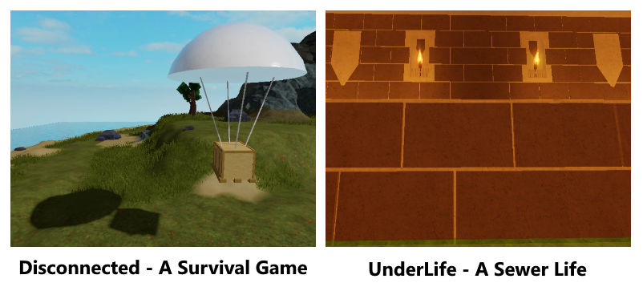

Luko Studios
Luko Studios is a New Zealand based Game Studio which has been making games for all ages for 3 years. The purpose of this website is to show off the many great games which Luko Studios has created over the 3 years of running. The games on show on this website are Disconnected and Underlife which is Luko Studios Latest Projects
Who Runs Luko Studios?
Luko Studios is run by Lucas Power, a 17 year old developer who has been learning to code for over 5 years. Lucas has always had passion to code and to bring free games for people to enjoy for endless hours.
Luko Studios provides many free games for players to have endless fun for free! Luko Studios has many games in development at the moment with plans to release them for public testing in the future to come
A Peek At 2 Games
DisconnectedUnderLife